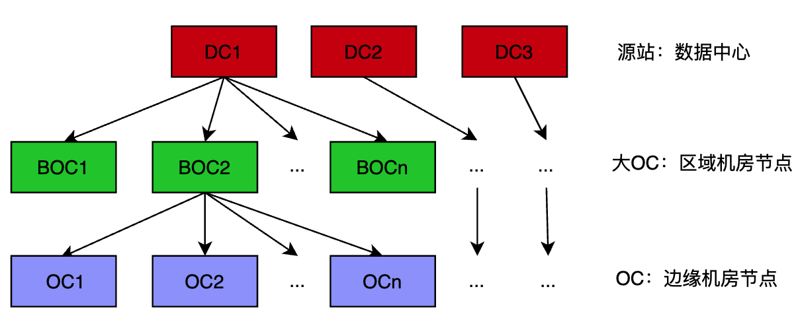
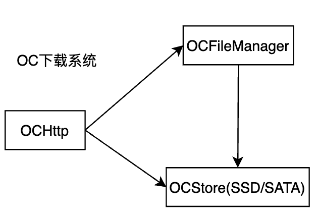

视频点播服务架构简介
 times read
times read
Contents
整体架构
视频点播服务：用于腾讯视频、爱奇艺、抖音等类似的在线视频播放平台，简单介绍下这样一个平台是怎么构成的。整体主要是以下几个模块组成的：
- 上传系统
- 转码系统
- 分发系统
- 调度系统
- 下载系统
上传系统
提供本地音视频文件上传服务，并存储在多个数据中心进行冗余备份。一般都会支持以下功能：
- 断点续传
- 超大文件上传
- 自定义备份数量
- 多种音视频格式
- 可选择转码格式、水印格式等
- 存储去重
- …
转码系统
在不同的场景，用户可能会选择不同的清晰度，比如在家电视播放时会选择 4K HDR 格式，在外面使用流量观看时，会选择 720p 等对网络要求不高的格式。 转码就是在上传视频后，将视频转码为不同分辨率、码率、格式（封装格式和编码格式）等，以适应不同的播放场景。目前大多数转码系统都是基于开源的 ffmpeg 来做的，通常转码会包含以下功能：
- 不同码率：4k、1080p、720p、480p 等
- 不同封装格式：MP4、AVI、RMVB 等
- 不同编码格式：视频编码格式（H265、H264、MPEG 等），音频编码格式（MP3、AAC 等）
- 定制水印：平台 logo
- 画质增强
分发系统
短时间内热点视频的大量访问，如果边缘的下载系统本地没有缓存，会大量回源数据中心，导致数据中心出现负载过高、播放卡顿、时延过高等问题。分发系统因此而生，通过分发系统，提前将热点视频下发到边缘机房节点，让用户就近就可获取到视频数据。比如所有热播剧在更新前，都会提前进行分发，保证播放体验。一般都会支持以下两种分发方式：
- 主动分发：知道视频比较火，平台运营提前进行分发
- 被动分发：不知道视频会火，但是实时数据统计显示视频播放量较大，达到某个阈值后就进行分发
调度系统
调度系统主要是根据用户的 IP，来返回用户一个就近的 CDN 地址，即下载系统中边缘机房节点的 IP 地址。获取用户 IP 后，可以知道运营商和地理位置信息，同时考虑各边缘机房负载等信息，进行打分选择出一个最优节点。
下载系统
视频播放其实就是一个文件下载过程，只是播放是可边播放边下载的。下载系统是一个典型的 CDN（内容分发网络），目的是让用户能够就近访问内容。下载系统的整体架构图如下： 
是一个三层架构： 源站：数据中心，分别在不同地点，至少为 3 个，保证有 3 个可用备份。 大 OC：区域机房节点，比如西南地区大 OC 1 号机房、华南地区大 OC 2 号机房，一个区域可能有多个大 OC 机房。 OC：边缘机房节点，比如武汉 OC 1 号机房、天津 OC 2 号机房，一般是按城市维度，根据下载量来动态增减。
对于每个 OC 机房节点，一个典型的架构图为： 
各个模块作用为：
- OCHttp：视频下载入口，参数校验、流媒体格式处理（hls 或者 mp4 等）、组装数据等，本机房不存在的视频文件，会通过反向代理方式去区域机房节点获取
- OCFileManager：索引系统，管理机房中所有视频文件的信息（存储位置、大小、格式、码率等）
- OCStore：存储系统，管理节点上存储文件的读写
Author yefengzhichen
LastMod 2022-10-17